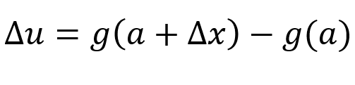
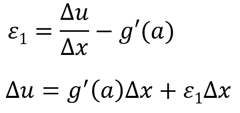
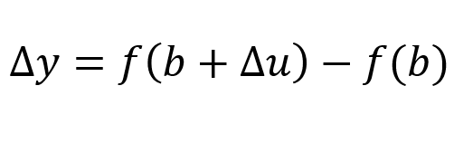
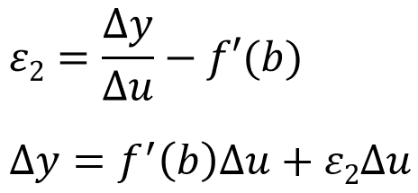
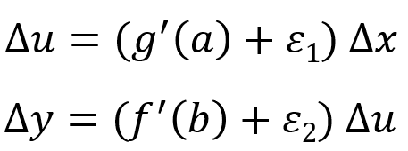
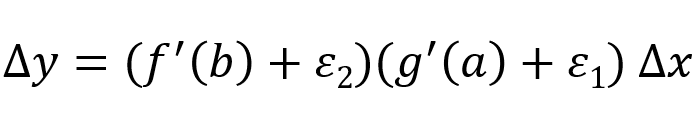
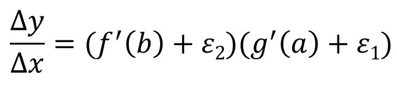
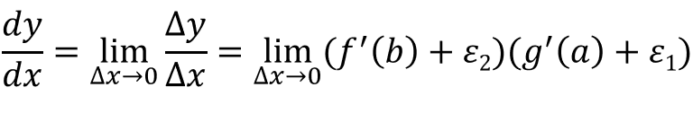
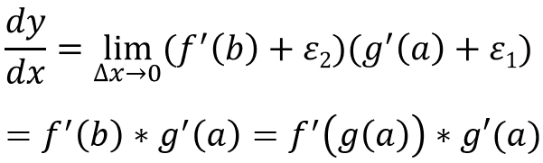

Suppose u = g(x) is differentiable at a. If Δx is an increment in x and Δu is an increment in u, then the increment of u can be defined like this:
Lets denote ε1 as the difference between Δu/Δx and the derivative:
Where ε1 -> 0 as Δx -> 0. Now suppose y = f(u) is differentiable at b = g(a) and let Δy is an increment in y, we can define Δy like this:
Lets denote ε2 as the difference between Δy/Δu and the derivative:
Where ε2 -> 0 as Δu -> 0. We have two equations so far:
We can substitute Δu:
So:
From this, we get:
As Δx -> 0, then Δu -> 0, which would mean both ε1 -> 0 and ε2 -> 0. Therefore:
